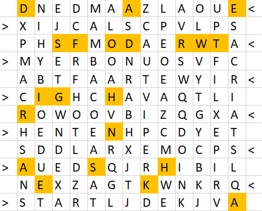
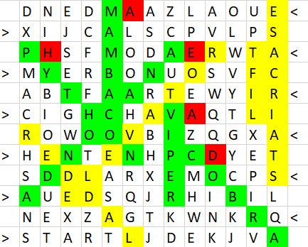

Solution: Ups and Downs
Answer: AHEAD
Written by Xue Heng
From the title and flavor text, coupled with certain suspicious looking words like VIPER, COBRA, PYTHON, MAMBA, ANACONDA, LADDER, LIFT, ELEVATOR and STAIRCASE which can be found in the word search, we can make the intuitive leap that this is a game of snakes and ladders. Also note that snakes only go downwards (3 possible directions) and ladders only go upwards (3 possible directions), following the flavor of the game. The string of numbers at the bottom of the grid denote our die rolls throughout the game. START is found at the bottom left, going from left to right, and END is found on the top left, going from right to left. This hints to us that we need to move our pawn according to the die rolls shown, where the pawn moves from left to right across the bottommost row, goes up one square, then right to left across the second row from the bottom, then up one square, then left to right across the third row from the bottom, etc.
All that is left to do, according to the flavor text, is to record the letters in each cell we end up in at the end of each die roll. If we end up at the bottom (first letter) of a ladder (LADDER/STAIRCASE/LIFT/ELEVATOR) or on top (first letter) of a snake (ANACONDA/COBRA/PYTHON) we will move our pawn to the cell containing the last letter of the word. Since moving up a ladder or down a snake counts as being in the middle of a turn, we don’t record the first letter, but only the last letter of these words.
These are the squares we land on in the grid:

Reading off the letters we land on in chronological order of the die rolls, we get RIGHTWARD OF SNAKE’S HEAD, which clues us to look at the letter to the right of each snake’s head. These are the locations of the snakes (green), ladders (yellow) and letters to the right of each snake’s head (red):

Reading the red cells in row-major order, we get the answer AHEAD.
Author's Notes
There’s an adder in ladder!